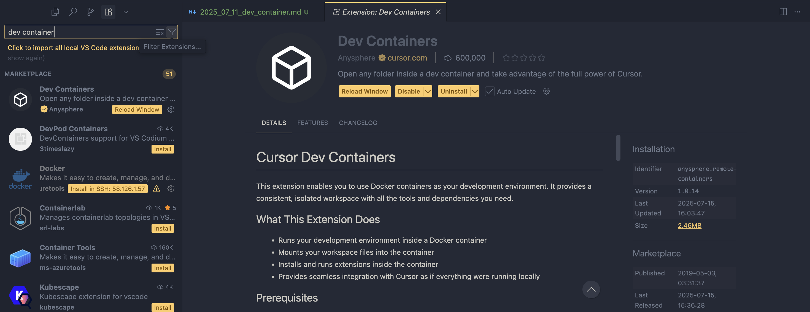

배경
근래에 회사에서 레거시 프로젝트를 수정하는 업무를 맡았다. 근데 스택이 너무 레거시 스택(자바 1.8, 톰캣, 오라클 11g)이라 초기 환경 설정이 힘들 것 같았다. 호스트에는 JDK 17이 깔려있는데 말이다.
스택은 트레이드오프에 따라 결정할 수 있으니 크게 거슬리는 건 없었는데, 진짜 문제는 기술 부채가 너무 심각했다.
Maven은 예전에 만들다 말았는지 컴파일 불가- 내부 소스 상태는 컨벤션이라고는 볼 수 없는 코드
- 빌드가 이클립스에 한정적이어서 나머지 IDE에서는 빌드 불가
이 중에서 제일 문제는 빌드가 이클립스에서만 가능하다는 것이다.
해결
해결책으로 나는 devcontainer를 도입했다. 실제로 사원 중에 VSC로 개발하는 인원이 대다수였고, 이클립스를 '제대로' 사용할 줄 아는 분은 없었다. 이때매 디버깅 시간도 오래 걸리고 잔버그로 고생하는 분들이 많았다.
기존 이클립스 IDE와 호환성을 유지하기 위해 다음과 같은 원칙을 준수했다:
- 기존 스택의 버전을 동일하게 사용한다.
- 기존 스택의 설정을 그대로 유지한다.
- IDE 설정을 건드리지 않는다.
구성
devcontainer를 구성하는 방법에는 일반적으로 두가지가 있다.
- 컨테이너 이미지를 직접 만들어서 사용하는 방법
- 컨테이너 이미지를 사용하는 방법
현재 유즈케이스에서는 따로 현대적인 스택도 아니고 이미지도 적다보니, 컨테이너 이미지를 직접 만드는 방법을 택했다.
우선 컨테이너 이미지를 입히기 전, 환경 구축을 먼저 해보자
프로젝트 루트에 .devcontainer 폴더를 만들고, 그 안에 devcontainer.json 파일을 만든다.
.devcontainer/
├── devcontainer.json
└── Dockerfile
아래가 도커 이미지를 직접 만들어 쓰는 방법이고,
{
"name": "devcontainer",
// 도커 이미지 빌드 설정 (직접 이미지를 빌드할 때)
"dockerFile": "Dockerfile",
"context": ".",
// 도커 이미지 사용 설정 (이미지가 미리 빌드되어 있을 때)
"image": "devcontainer/devcontainer:latest",
// 위 둘 중 택일
// ------- 추가 설정 -------
// VSC 설정
"settings": {
"terminal.integrated.shell.linux": "/bin/bash",
"java.home": "/usr/lib/jvm/java-17-openjdk-amd64",
},
// VSC 익스텐션 (devcontainer가 연결되면 자동으로 설치됨)
"extensions": [
"vscjava.vscode-java-pack",
],
// 컨테이너 내부 포트를 호스트에 포워딩
"forwardPorts": [8080],
// 컨테이너 내부 사용자 이름 (기본값은 root)
"remoteUser": "dev",
}
아래가 배포된 이미지를 사용하는 방법이다.
{
"name": "devcontainer",
"dockerFile": "Dockerfile",
"context": ".",
// ------- 추가 설정 -------
// VSC 설정
"image": "devcontainer/devcontainer:latest",
}
특별한 경우를 제외하고는 유저의 권한은 root로 설정하지 않는 것이 보안에 바람직하다. 컨테이너 내부에서 root 권한으로 실행되는 프로세스가 해킹당할 경우, 호스트 시스템에도 심각한 보안 위험이 될 수 있기 때문이다. 따라서 일반적으로는 remoteUser 설정을 통해 일반 사용자 권한으로 실행하는 것이 권장된다. (참고: https://code.visualstudio.com/remote/advancedcontainers/add-nonroot-user)
이제 VSC의 확장 프로그램에서 devcontainer를 검색하고 받아주자

저는 커서이기 때문에 해당 확장 프로그램을 설치함
이제 프로젝트 루트에서 Ctrl + Shift + P를 눌러 Dev Containers: Reopen in Container를 선택하면 된다.
결론
devcontainer도 만능은 아니다. 한 프로젝트 당 GuestOS를 하나씩 할당하기에 만약 여러 프로젝트를 킨다면 램을 비용이 꽤 든다.
좋은 점은 보안적으로 좋을 것이다. 유저를 제한해두면 해당 컨테이너 내에서 어떤 프로세스를 실행하더라도 호스트 시스템에 영향을 미치지 않는다. (제로데이 취약점이 있을수도 있긴 함)